01
活动细则
1. 用户凡购买相关黄石线路超过$800即可参加此优惠活动，在订单优惠码处填写相应优惠码，即减即省。凡黄石行程总金额超过$800，送现金折扣$22；凡黄石行程总金额超过$900，送现金折扣$23；凡黄石行程总金额超过$1300，送现金折扣$32；凡黄石行程总金额超过$2000，送现金折扣$52；凡黄石行程总金额超过$3000，送现金折扣$75；凡黄石行程总金额超过$5000，最高送至$100；
2. 该活动支持所有支付方式，支持旅游团号为LA235 LA217 LA209 LV235 LV217 LV209 SLC235 SLC217 SFO235 SFO217 SFO209 DV217 DV209开头的黄石线路，但不再赠送积分，此优惠码不与其他优惠码叠加使用；
3. 活动时间：2013年8月29日-2013年10月2日
优惠码
优惠码usitripys22: 订单满$800，直降$22；
优惠码usitripys23: 订单满$900，直降$23；
优惠码usitripys32: 订单满$1300，直降$32；
优惠码usitripys52: 订单满$2000，直降$52；
优惠码usitripys75: 订单满$3000，直降$75；
优惠码usitripys100: 订单满$5000，直降$100；
在订单优惠码处填写相应优惠码，即减即省！
02
更多线路>>
洛杉矶出发黄石公园线路
- 黄石公园,总统巨石,西峡谷八日全境游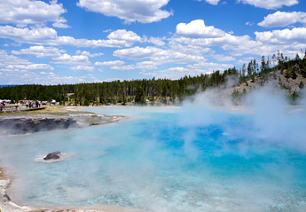
- 发团:(13/6/26/-10/2)周三/周六
- $429.00起
- 线路特色：沿着5号公路，驶入北美最大的莫哈比沙漠，到达旅游胜地-赌城拉斯维加斯。徒步观光奇形怪状沙石拱门，观看全球最大雕像疯马巨石。深度游览世界第一国家公园-黄石公园，在牛仔镇杰克逊体验西部风情。参观神秘宗教总部-摩门大教堂，登上玻璃桥，俯瞰科罗拉多峡谷河流壮丽风光。享受拉斯豪华夜游，登高塔观全城夜景，还可到赌场小试身手。

- 黄石公园，拱门公园，总统巨石六日乐活游
- 发团:(13/6/26-10/2)周三/周六
- 去看看$294.00起
- 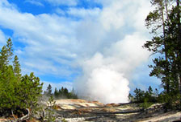
- 黄石公园，包伟湖，布莱斯峡谷七日游
- 发团:(13/6/26-10/2)周三/周六
- 去看看$306.00起
- 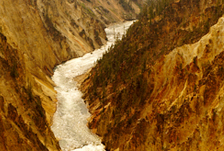
- 黄石公园,西峡谷,拱门公园八日游
- 发团:(13/4/24-10/2)周二/周三/周五/周六
- 去看看$329.00起

- 黄石公园,玻璃桥,包伟湖十日游
- 发团:(13/4/24-10/2)周三/周五/周六
- 去看看$429.00起
03
更多线路>>
拉斯维加斯出发黄石公园线路
- 黄石公园,总统巨石,好莱坞十二日深度游

- 发团:(13/6/29-10/2)周三/周六
- $558.00起
- 线路特色：最完美的行程，览尽西部名城名景。以最放松的姿态，开始美西深度游，周边景区一一游遍。进入如梦如幻的黄石公园，欣赏宛若仙境的温泉湖区。途经大提顿国家公园，感受清丽脱俗的雪山美景。登上天空步道玻璃桥，360度无死角探秘举世闻名的科罗拉多大峡谷。还有名牌工厂直销购物中心超值采购，拱门国家公园、疯马巨石、总统巨石、熊世界、盐湖城摩门大教堂等景区风光，美景不断，让您叹为观止！
- 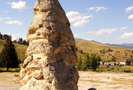
- 黄石公园，总统巨石，大提顿公园六日游
- 发团:(13/6/26-10/2)周三/周六
- 去看看$294.00起
- 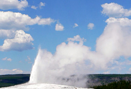
- 黄石公园,拉斯维加斯,总统巨石七日游
- 发团:(13/6/26-10/2)周三/周六
- 去看看$306.00起

- 黄石公园,拉斯,西峡谷,拱门八日游
- 发团:(13/4/24-10/2)周二/周三/周五/周六
- 去看看$329.00起
- 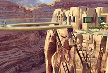
- 黄石公园,包伟湖,玻璃桥十日游
- 发团:(13/4/24-10/2)周三/周五/周六
- 去看看$429.00起
04
更多线路>>
盐湖城出发黄石公园线路
- 盐湖城，黄石公园，西峡谷六日精华游

- 发团:(13/6/27-10/3)周四/周日
- $294.00起
- 线路特色：在最短的时间内，将美西精华景点尽收眼底。繁忙中给自己放个小假，远离尘嚣，从盐湖城出发，亲临梦幻黄石公园，见证老忠实喷泉准点喷发，欣赏宛若仙境温泉区，还有油画般美丽的黄石峡谷瀑布。不可错过的西峡谷壮丽风光，坐上直升飞机，从天空到山谷到河流，一场视觉盛宴，尽享大自然奇景。行程结束，再血拼一次购物天堂，美景美物，一个也不错过！
- 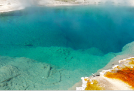
- 盐湖城，大提顿公园，黄石公园四日游
- 发团:(6/27-10/3)周四/周日
- 去看看$259.00起
- 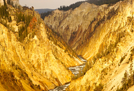
- 盐湖城，黄石公园，大峡谷六日精华游
- 发团:(13/6/27-10/3)周四/周日
- 去看看$301.00起
- 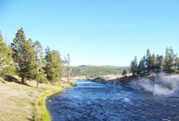
- 黄石公园,盐湖城,大提顿公园四日游
- 发团:(13/4/25-10/3)周日/周三/周四/周六
- 去看看$468.00起

- 黄石公园,拉斯维加斯,西峡谷六日游
- 发团:(13/4/25-10/3)周日/周三/周四/周六
- 去看看$658.00起
05
更多线路>>
丹佛出发黄石公园线路
- 黄石公园-盐湖城-拱门-总统巨石六日游

- 发团:(2013/4/24-2013/10/2)周二/周三/周五/周六
- $281.00起
- 线路特色：丹佛出发，在西部硬朗和苍茫的天空下，步入著名摇滚音乐现场红石公园。途经西部牛仔聚集地香岩城，参观印第安民族英雄馆 ，站在全球最大雕像疯马巨石前，感受印第安人追求自由的决心，感叹总统巨石背后的历史。走进黄石公园，享受纯自然风光。沿着蛇河河谷，进入大提顿国家公园。造访神秘宗教组织总部摩门大教堂，参观当地州政府大厦，感叹这座在沙漠里崛起的城市-盐湖城。
- 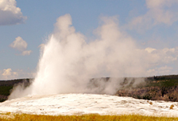
- 黄石公园,丹佛,总统巨石五日游
- 发团:(2013/4/24-10/2)周二/三/五/六
- 去看看$264.00起
- 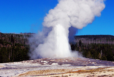
- 黄石公园,盐湖城,拱门,总统巨石六日游
- 发团：(13/4/24-10/2)周二/周三/周五/周六
- 去看看$306.00起
- 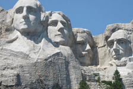
- 黄石公园,总统巨石,盐湖城五日轻松游
- 发团:(2013/5/12日-9/22)周日
- 去看看$296.00起
- 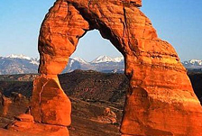
- 黄石公园,总统巨石,拉斯维加斯六日游
- 发团:(2013/5/12日-9/22)周日
- 去看看$329.00起
06
更多线路>>
旧金山出发黄石公园线路
- 旧金山，优胜美地，黄石公园十一日欢乐游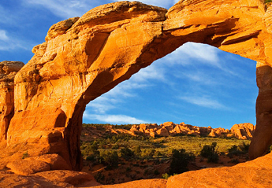
- 发团:(13/6/22-9/29)周六，周日
- $469.00起
- 线路特色：邂逅西部城市风情，体味别具特色的沙漠风光。大巴从城市穿过峡谷，在梦和现实间来回穿梭，旅程中体验别样生活。最美城市旧金山出发，在斯坦福大学感受名校风采，在优胜美地宁静美好的风光中聆听心灵的呼唤。乘船游览包伟湖，欣赏周边的湖光山色；在8000尺高的布莱斯峡谷看异石嶙峋，感受大自然的鬼斧神工。完整的一日深度游，邀您共赴梦幻黄石。穿越拉斯大道的繁华，给您一个happying ending！

- 优胜美地,黄石公园,西峡谷十日游
- 发团:(13/6/23-9/29)周日
- 去看看$469.00起
- 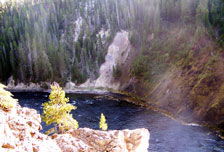
- 黄石公园，拱门，西峡谷十二日轻松游
- 发团:(13/6/22-9/29)周六/周日
- 去看看$486.00起

- 黄石公园,总统巨石,迪士尼十二日游
- 发团:(13/4/24-9/28)周一/周五/周六
- 去看看$605.00起

- 黄石公园,西峡谷,迪士尼十一日游
- 发团:(13/4/24-9/28)周一/周五/周六
- 去看看$658.00起
07
更多线路>>
独享黄石湖木屋
- 黄石公园-布莱斯峡谷七日超值游(入住黄石湖木屋)

- 出团日期:(2013/6/26-2013/10/2)周三/六
- $319.00起
- 推荐理由：走四方旅游网现推出黄石湖畔小木屋度假轻松之旅，九分美景，一分心情，十分惬意，是黄石湖木屋（Grant Village）为您带来的独特体验。放松心情，倚坐在小木屋窗前，鼻尖是木头的清香，指尖划过从黄石湖边吹来的清风，目光所及则是粼粼波光，光景如是，却是人间不可多得的美景。

- 黄石公园,包伟湖,大峡谷七日游
- 出团日期:(2013/6/26-2013/10/2)周三/六
- 去看看$319.00起

- 黄石公园,大提顿公园,优胜美地十日游
- 出团日期:(2013/6/29-2013/9/28)周六
- 去看看$451.00起
- 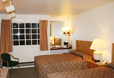
- 黄石公园,布莱斯峡谷,西峡谷十日游
- 出团日期:(2013/6/29-2013/9/28)周六
- 去看看$451.00起
- 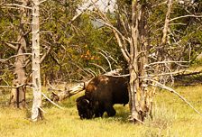
- 优胜美地,黄石公园,西峡谷十日游
- 出团日期:(2013/6/23-9/29)周日
- 去看看$481.00起
08
黄石国家公园介绍
黄石国家公园（Yellowstone National Park），简称黄石公园，是世界第一座国家公园，成立于1872年。黄石公园位于美国中西部怀俄明州的西北角，并向西北方向延伸到爱达荷州和蒙大拿州，面积达7988平方公里。这片地区原本是印地安人的圣地，它在1978年被列为世界自然遗产。现是美国旅游的圣地，很受旅游爱好者的喜欢。黄石国家公园自然景点分为五大区，即玛默区、罗斯福区、峡谷区、间歇泉区和湖泊区。
黄石公园旅游看点：
地热奇观：西北的马默斯温泉区以石灰石台阶为主，故也称热台阶区；东北为罗斯福区，仍保留着老西部景观；中间为峡谷区，可观赏黄石大峡谷和瀑布；东南为黄石湖区，主要是湖光山色；西及西南为间歇喷泉区，遍布间歇喷泉、温泉、蒸气、热水潭、泥地和喷气孔。
地热奇观代表性景点：“狮群喷泉”、 “蓝宝石喷泉”、 “老忠实泉”“大��镜温泉”
动物生态： 黄石公园有七种有蹄类动物，如有美洲野牛（bison），驼鹿（moose, elk），叉角羚（pronghorn）等等，有两种熊，黑熊与棕熊、67种哺乳动物、鸟类有300多种，当然，还有大灰狼也是生活在黄石公园非常著名的动物。
附近著名美国旅游城市：洛杉矶、盐湖城、丹佛、拉斯维加斯等多个著名城市靠近美国黄石国家公园，因此前去黄石公园旅游可以同时选择在旅途进行相关城市著名景点的参观，让你的美国之旅更加圆满和充实
黄石公园开放时间： 除11/11(退伍军人日)和11/27(感恩节)外,基本上美国黄石公园全年开放的. 除了北部和东北部出入口，其他入口在每年的11份��冬季清理道路及3月底到4月初��夏季清理道路的时间都将关闭。在冬季公园内部道路只开放给雪地车。
黄石公园最适合旅游的季节：夏季
黄石公园的气候：夏季白天气温达约25摄氏度，在有些低地带会达到30度。平时晚上都很凉爽，但是高地带有时会下降到零度以下，而且，伴随着暴风雨的江风也会常常不期而至。 冬季白天气温达约在零下20到零下5度之间。最低气温记录为零下54度。降雪量很大，平均为150英尺。另外，前去黄石旅游的驴友还需注意白天黑夜的温差变化，做好相关应对准备。
黄石公园旅游注意事项 ：
温泉：不可以在温泉里游泳。来此旅游的游客必须在安全的地方观赏温泉。有的温泉里含有一些物质有可能会划伤皮肤或造成感染，有的温泉水温超过沸腾温度，如果贸然接近会对皮肤造成严重损伤。
野生动物：不可以接近或者喂野生动物食物。不能给野生动物拍照。不要接近野生动物。要按照公园要求与野生动物保持距离。
枯树：黄石公园里有一些枯树，是1988年火灾时遗留下来的。有的树枝会落下砸到游人，所以在路上走的时候一定要小心。如果要在公园里野营或者聚餐，不要选长着很多枯树的地方。